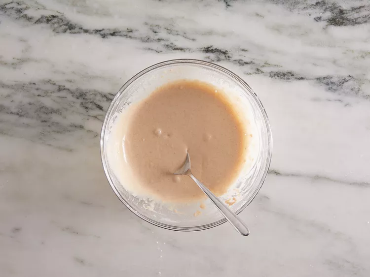

Slice potatoes into French fries and place them into a large bowl of cold water to prevent them from turning brown.

Heat oil in a heavy saucepan or large skillet to 350 degrees F (175 degrees C).
While the oil is heating, sift flour, garlic salt, onion salt, paprika, and salt into a large bowl. Gradually stir in enough water to make a slightly thick batter that can be drizzled from a spoon.

Drain fries and pat dry; dip into the batter one at a time.
Lower fries carefully into the hot oil in batches to prevent them from clumping together. Fry until golden brown and crispy on all sides, about 7 to 10 minutes.

Drain fries on a paper towel-lined plate.
Serve hot and enjoy!